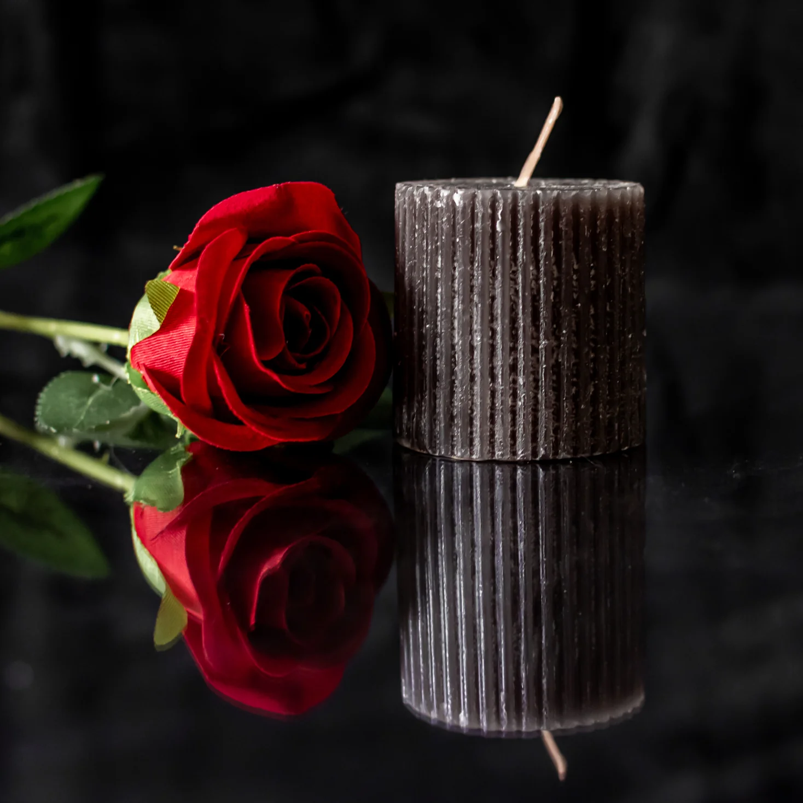

Whisper Flame Candle
Een romantische massagekaars die een warme en intieme sfeer creëert voor een ontspannen avond samen.
Belangrijkste kenmerken
- Creëert romantische sfeer
- Massagekaars voor zachte aanrakingen
- Gemakkelijk in gebruik
- Perfect voor intieme avonden
Onze ervaring / advies
De kaars ruikt aangenaam en het gesmolten wax is perfect voor een zachte massage. Een klein product met groot effect op sfeer en intimiteit.